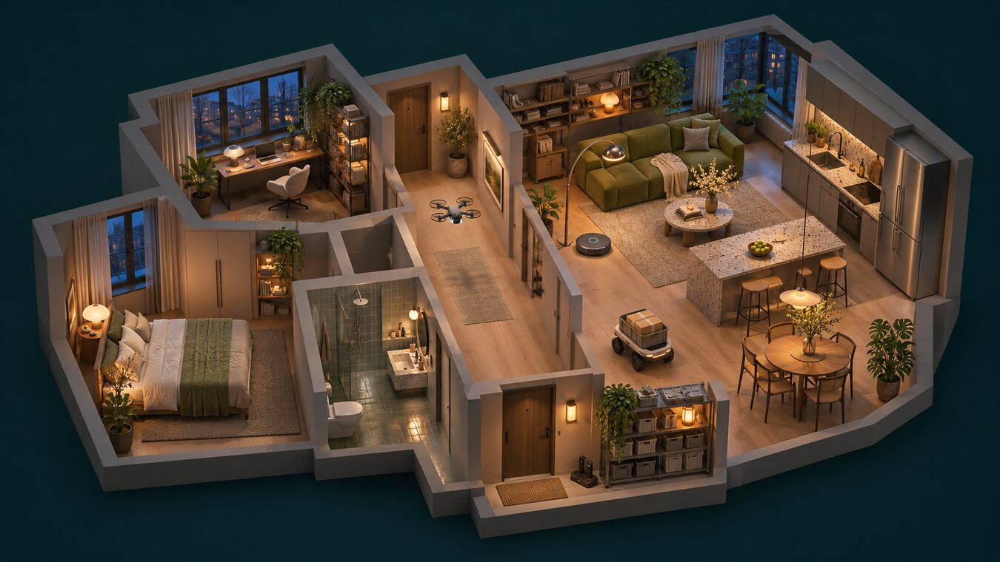

МЕТАРОЙ 1.0
Квартира 42
Как домашние роботы действуют, когда привычный план срывается.
Выбрать сценарий
Что случилось дома?
Операция
Задачи —Связь —
Перетащите, чтобы повернуть · Колесо меняет масштаб
Запуск симуляции
Устройства дома
Решения штаба
К картеТекущий шаг
Команды и проверки
Альтернативы и протокол
Полный протокол
Один сбой, два плана
Сравнение после отказа узла связи.
Контрольные прогоны
| Контроллер | Итог | Задачи | Время | Энергия | Аудит |
|---|
Для каждого сценария контроллеры начинают в одинаковых условиях.